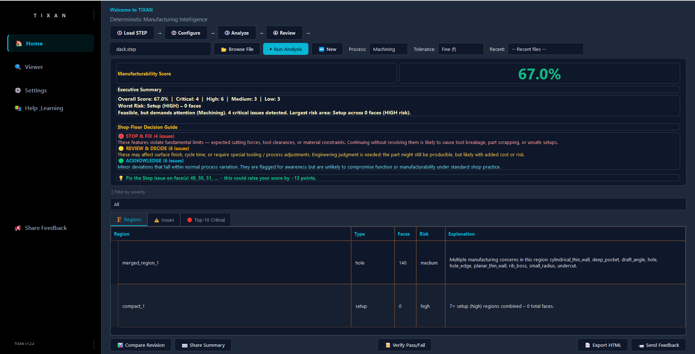
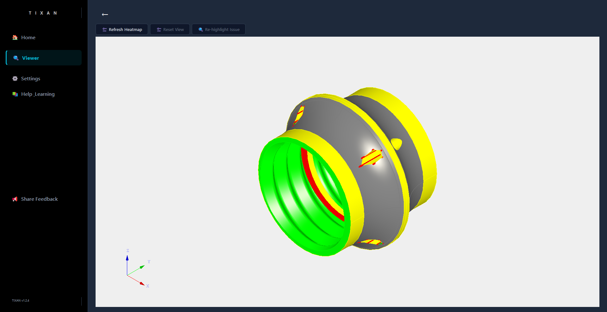
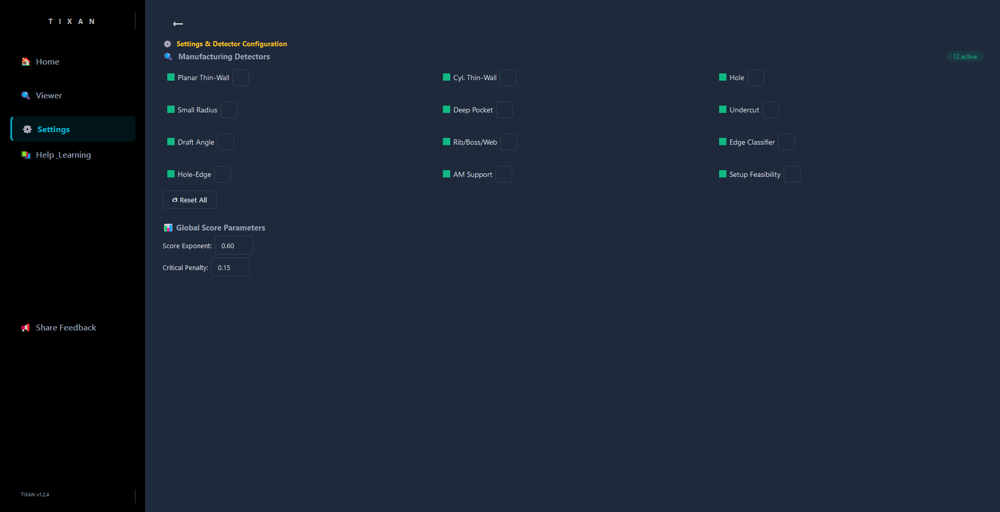
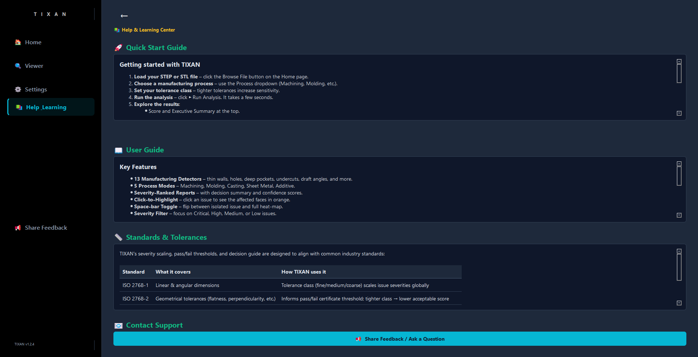

TIXAN reads your STEP or STL file and instantly tells you exactly which faces are too thin, too deep, or impossible to machine – with exact measurements, no cloud, no AI. Mathematically it calculates the suggestions to make using phyiscs

Home Page – Dashboard, score, decision guide, and issue tables

3D Viewer – Face‑coloured heatmap, wireframe, and orange highlight

Settings Page – Enable/disable detectors, tune thresholds, adjust scoring

Help & Learning – Quick start guide, user manual, and standards reference
Home Page – Load a STEP, run analysis, and understand the score
3D Viewer – Inspect issues, toggle wireframe, and use clip planes
Reports – Export HTML, verify pass/fail, and compare revisions
Settings – Customise detectors and shop‑specific thresholds
All videos are short, offline‑friendly MP4 files. Click to play right here.
Every issue links to a specific CAD face with an exact measurement.
Planar Thin‑Walls, holes, Cylindrical Thin‑Wall, Small Internal Radii, Deep pockets, Undercuts, Draft angles, Rib / Boss / Web, Edge Classifier, Hole‑Edge Proximity, AM Support, Setup Feasibility, Tolerance Sensitivity
Machining, Molding, Casting, Sheet Metal, Additive. Each with custom thresholds.
TIXAN v1.2.6 doesn’t just find manufacturability issues – it traces force flow, computes exact deflection & stress, and gives you physics‑backed design fixes. All offline. No mesh.
Automatically discover how force moves from the applied load through the part to the supports. Every path is ranked by confidence and highlights the weakest structural link.
Deflection, von Mises stress, safety factor, buckling, and natural frequency – computed from closed‑form engineering formulas using your exact CAD geometry.
Get concrete, equation‑backed recommendations like “increase thickness of face 32 from 1.0 mm to 1.5 mm to reduce deflection by 70%”. Each move is automatically checked for feasibility.
Adjust force magnitude, change material (Steel / Aluminum / Titanium / ABS), or click any face on the 3D model to define exactly where the load is applied or where the part is clamped.
TIXAN learns from your shop’s decisions. Mark any issue as accepted and the system remembers – automatically adjusting severity over time. No cloud, no external servers. Your shop’s intelligence stays with you, making each report smarter than the last.
Every recommendation is grounded in real‑world physics, not guesswork. Cantilever deflection, tool stick‑out limits, hole‑edge breakout – all calculated from exact geometry. You get manufacturing advice you can trust, backed by measurable first‑principle reasoning.
A single number from 1 to 10 that rates how production‑ready your part is. Combines criticality, count of issues, and process‑specific thresholds into an instant readiness indicator. No interpretation needed – know in seconds if your design is shop‑ready.
Export a self‑contained HTML report with a full analytics dashboard, severity breakdown, design‑change simulator, and issue register. Print to PDF or share offline – the report is styled for clarity and built to support real shop‑floor decisions.